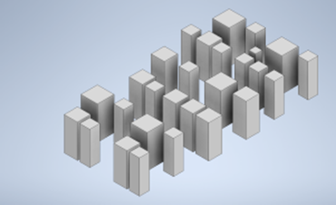
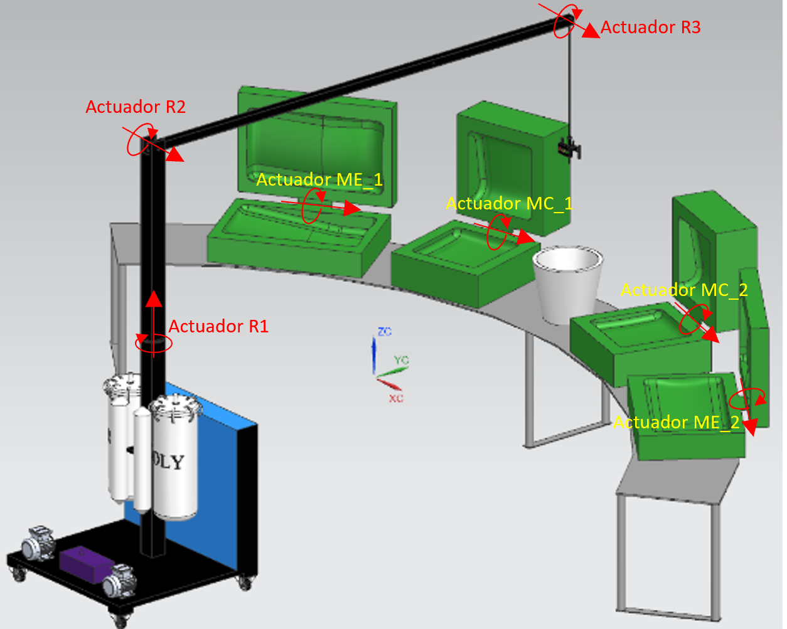
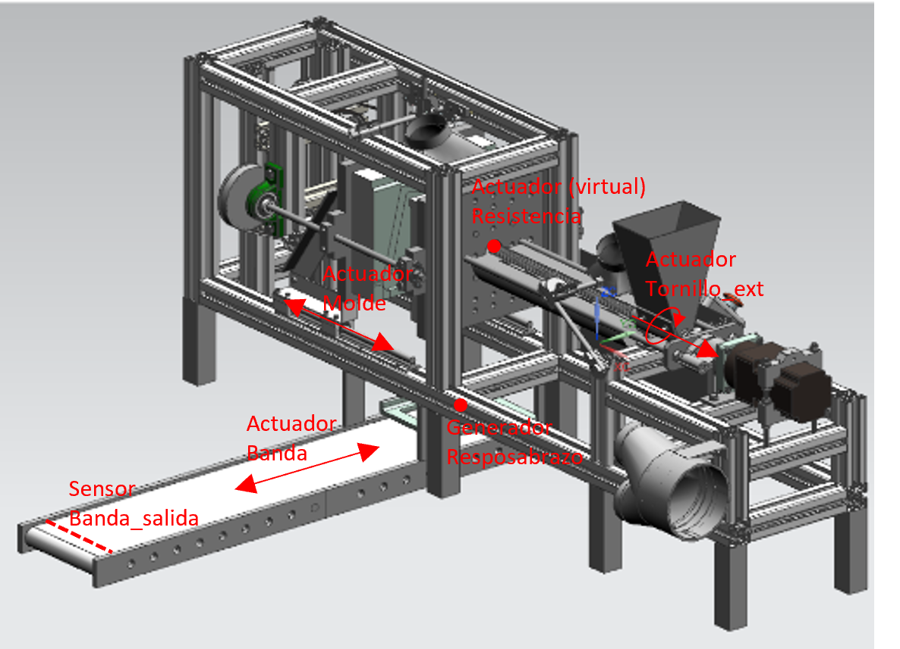
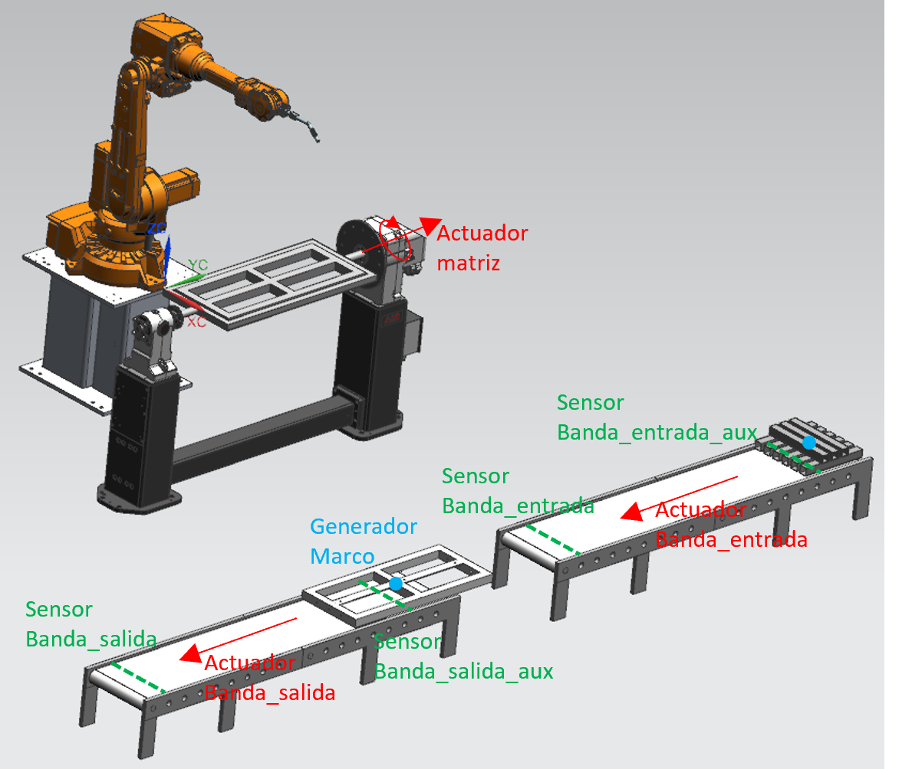

Para el dimensionamiento de la planta resultante se realizó un modelamiento 3D en el software NX con la organización de cada una de las celdas, teniendo en cuenta las facilidades en el flujo de material entre celdas.
Teniendo en cuenta lo anterior se puede concluir que la planta desarrollada tiene unas dimensiones de 250 m y 100 m.
Para el módulo de Digital Factory se seleccionaron 3 celdas para modelar a detalle y realizar el control y supervisión de estas: Celda de inyección de PU, Celda de extrucción de PP y Celda de soldadura robotizada.
En esta celda se realiza el conformado de los cojines de asiento y espaldar mediante un proceso de inyección de poliuretano en una serie de moldes.
Esta celda está compuesta de 1 máquina de inyección de PU cuyo brazo se puede mover por medio de un operario, 4 moldes para PU donde 2 son para espaldar y 2 son para asiento, y 1 caneca para realizar la eyección de PU restante en los canales de la máquina.
El extrusor es usado para producir el reposabrazos mediante la inyeccion de polipropileno.
Esta celda está compuesta por 1 banda transportadora y 1 máquina de extrucción de plástico, la cual fue dividida en sus componentes: estructura principal, tornillo extrusor y molde móvil.
En la celda de soldadura se toman todos los perfiles, se montan sobre una matriz y un brazo robótico se encarga de realizar el proceso de soldado de forma autógena (soldadura oxiacetilénica).
Esta celda está compuesta por un robot de 6 articulaciones con una herramienta para soldadura, una matriz para para la soldadura del marco de la silla y que permite rotación sobre su propio eje y 2 bandas transportadora.
